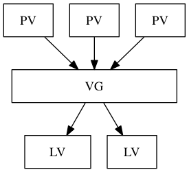

设备文件是关联至一个设备驱动程序，进而能够跟与之对应硬件设备进行通信
SCSI、SATA、SAS、USB: /dev/sd*
不同设备: sda, sdb, ... 同一设备不同分区: sda1, sda2, ... 逻辑分区要从5开始编号
fdisk对一块硬盘最多只能管理15个分区
fdisk -l [-u] [device...] # 查看磁盘分区信息，默认显示所有分区信息 fdisk device # 管理磁盘分区 p: print, 显示已有分区 n: new, 创建 d: delete, 删除 w: write, 写入磁盘并退出 q: quit, 放弃更新并退出 m: 获取帮助 l: 显示分区id列表 t: 调整分区id
通知内核重新读取分区表
partx -a /dev/DEVICE [-n M:N] # 扫描DEVICE的分区编号从M到N的分区 kpartx -a /dev/DEVICE partprobe [/dev/DEVICE] # CentOS 5
cat /proc/partations # 查看内核是否已经识别新的分区
| 类型 | 实现 |
|---|---|
| Linux文件系统 | ext2、ext3、ext4、xfs、btrfs、reiserfs、jfs |
| 交换分区 | swap |
| 光盘 | iso9660 |
| Windows | fat32、ntfs |
| Unix | FFS、UFS、JFS2 |
| 网络文件系统 | NFS、CIFS |
| 集群文件系统 | GFS2、OCFS2 |
| 分布式文件系统 | ceph、moosefs、mogilefs、GlusterFS、Lustre |
根据文件系统是否支持"journal"功能(用于提升存储出错后修复的速度)，文件系统可分为
Linux的虚拟文件系统VFS为不同的文件系统统一了接口，提高了文件系统的兼容性
cat /proc/filesystem # 列出目前系统所支持的文件系统
通用格式化分区工具
mkfs.FS_TYPE /dev/DEVICE mkfs -t FS_TYPE /dev/DEVICE FS_TYPE: ext4, xfs, btrfs, vfat -L 'LABEL': 设定卷标 -f: 强制创建文件系统
ext系列文件系统专用管理工具
mke2fs [OPTIONS...] /dev/DEVICE -t ext2|ext3|ext4: 文件系统类型 -j: 添加日志，相当于-t ext3 -L 'LABEL': 设定卷标 -b 1024|2048|4096: 块大小(如果小文件过多可以使用较小的块) -i NUM: 为数据空间中每多少字节创建一个inode(此大小不应该小于block的大小) -N NUM: 为数据空间创建多少个inode -m NUM: 为管理人员预留的空间占据的百分比 -O [^]FEATURE[,...]: 启用或关闭指定特性
创建交换分区(分区id为82)
mkswap [OPTIONS] device
-L 'LABEL': 设定卷标
块设备属性信息查看
blkid [OPTION...] [DEVICE] -U UUID: 根据指定的UUID来查找对应的设备 -L LABEL: 根据指定的LABEL来查找对应的设备
查看或设定ext系列文件系统的LABEL
e2label DEVICE [LABEL]
重新设定ext系列文件系统的可调整参数的值
tune2fs [OPTIONS...] /dev/DEVICE -l: 查看指定文件系统超级块信息(super block) -j: 将ext2升级为ext3 -L 'LABEL': 修改卷标 -U UUID: 修改UUID号 -m NUM: 修预留给管理员的空间百分比 -O [^]FEATURE: 文件系统属性启用或禁用 -o [^]FLAG: 调整文件系统的默认挂载选项
查询ext分区的布局信息和超级块信息
cat /proc/mounts # 查看内核追踪到的已挂载的所有设备 mount # 通过查看/etc/mtab文件查看系统已挂载的所有设备
挂载: 额外文件系统与根文件系统某现存的目录(挂载点)建立起关联关系，进而使得此目录做为其它文件访问入口的行为
mount [-fnrsvw] [-t vfstype] [-o options] DEVICE MOUNT_POINT DEVICE: 设备文件/卷标/UUID/伪文件系统名字(proc, sysfs, devtmpfs, yamligfs) -t vsftype: 指定要挂载的设备上的文件系统类型，默认会使用blkid自动判断 -r: readonly，只读挂载 -w: read and write, 读写挂载 -n: 不更新/etc/mtab，但还是会更新到/proc/mounts -a: 自动挂载/etc/fstab中支持自动挂载的设备 -L 'LABEL': 以卷标指定挂载设备 -U 'UUID': 以UUID指定要挂载的设备 -B, --bind: 绑定目录到另一个目录上 -o options: 挂载文件系统选项
| 挂载选项 | 作用 |
|---|---|
| remount | 重新挂载 |
| async | 异步模式 |
| sync | 同步模式(修改立即写人磁盘) |
| atime/noatime | 开关目录和文件的atime的更新 |
| diratime/nodiratime | 开关目录的atime的更新 |
| auto/noauto | 是否自动挂载 |
| exec/noexec | 是否支持将文件系统上应用程序运行为进程 |
| dev/nodev | 是否支持在此文件系统上使用设备文件 |
| suid/nosuid | 开关suid的支持 |
| ro/rw | 只读/读写 |
| user/nouser | 是否允许普通用户挂载此设备(默认只能由root挂载) |
| acl | 启用此文件系统上的acl功能 |
| defaults | 相当于rw,suid,dev,exec,auto,nouser,async |
mount -r /dev/cdrom MOUNT_POINT # 挂载光盘设备 mount -r -t iso9660 /PATH/*.iso MOUNT_POINT # 挂载光盘文件
卸载: 解除挂载关联关系的过程，但进程正在使用中的设备无法被卸载
umount DEVICE/MOUNT_POINT
fuser -v MOUNT_POINT # 查看正访问指定文件系统的进程 fuser -km MOUNT_POINT # 终止所有正访问指定文件系统的进程
swapon [OPTION] [DEVICE] # 启用交换分区 -a: 激活所有交换分区，不用指定DEVICE -p PRIORITY: 指定交换分区的优先级
swapoff [OPTION] [DEVICE] # 关闭交换分区
free [OPTION] # 查询内存空间使用状态 -m: 以MB为单位 # 真正的内存使用=used-buffers-cached
df [OPTIONS] # 文件系统空间占用信息 -l: 只显示本地文件系统分区 -h: human-readable -i: 显示inodes的使用情况 -P: 以Posix兼容的格式输出，方便于文字处理工具
du [OPTIONS] DIR # 查看某目录空间占用信息 -h: human-readabel -s: 只显示指定目录
df是通过元数据来统计，会计算一些正使用但已经被删除的文件 du不会记录一些正使用但已经被删除的文件
/etc/fstab 是文件挂载的配置文件
# 该文件每行定义一个要挂载的文件系统 要挂载的设备或伪文件系统 挂载点 文件系统类型 挂载选项 备份频率 自检次序 要挂载的设备或伪文件系统: 设备文件、LABEL(LABEL="")、UUID(UUID="")、伪文件系统名称(proc, sysfs) 挂载选项: defaults ... 备份频率: 0: 不做备份 1: 每天备份 2: 每隔一天备份 自检次序: 0: 不自检 NUM: 自检的优先级，一般只有rootfs才用1
File System Check
fsck.FS_TYPE [OPTIONS...] DEVICE fsck -t FS_TYPE [OPTIONS...] DEVICE -a: 自动修复错误 -r: 交互式修复错误
ext文件系统专用的检测修复工具
e2fsck [OPTIONS...] DEVICE -y: 自动修复错误 -f: 强制修复
Ext2区分为多个block group，每个块组都有独立的inode/block/superblock系统
用于放置文件数据块的地方
存储文件的inode
Superblock记录的信息: block/inode的总量、未使用的inode/block数量、block与inode的大小、文件系统挂载时间、最近写数据时间、最近fsck时间等相关信息
dumpe2fs 可查询)记录每个block group的开始和结束的block号码, 以及说明每个区段的block号码(dumpe2fs可查询)
记录使用与未使用的block号码
记录使用与未使用的inode号码
目录占用一个inode和至少一个block
. 和 .. 也算是目录的硬链接)ln [-sv] SRC DEST # 默认创建硬链接 -s: 创建符号链接 -v: verbose
手动将磁盘缓存写入磁盘中
RAID: Redundant Arrays of Independent Disks
mdadm: 模式化工具，使用内核中的md模块(multi devices)
mdadm [mode] <raiddevice> [options] <component-devices> mode: 创建: -C 装配: -A 监控: -F 管理: -f, -r, -a <raiddevice>: /dev/md[num] # 重启可能会改变 <component-devices>: 任意块设备(id为fd) -C: 创建模式 -n num: 使用num个块设备来创建此RAID -l num: 指明要创建的RAID的级别 -a {yes|no}: 自动创建目标RAID设备的设备文件 -c CHUNK_SIZE: 指明块大小 -x num: 指明空闲盘的个数 -S: 停止md设备 -D: 显示RAID的详细信息 管理模式 -f: 标记指定磁盘为损坏 -a: 添加磁盘 -r: 移除磁盘
/proc/mdstat 来查询电脑的RAID情况LVM: Logical Volume Manager, 使用内核中的dm模块(device mapper)

pv: Physical Volume
pvs # 简要显示系统上目前的pv信息 pvdisplay # 显示pv的详细信息 pvcreate /dev/DEVICE # 创建pv pvremove /dev/DEVICE # 删除pv # 使用的磁盘设备文件id应为8e pvmove /dev/DEVICE # 移动设备上边的数据
vg: Volume Group
vgs vgdisplay vgcreate [-s PE_Size(默认4MB)] VolumeGroupName PhysicalDevicePath... vgextend VolumeGroupName PhysicalDevicePath... # 添加vg中的pv vgreduce VolumeGroupName PhysicalDevicePath... # 删除vg中的pv # vgreduce之前要对pv先做pvmove，移动上边的数据 vgremove VolumeGroupName # 删除vg
lv: Logical Volume
lvs lvdisplay lvcreate -L LV_Size -n NAME VolumeGroupName lvremove /dev/VG_NAME/LV_NAME
LVM的空间调整是通过调整PE(Physical Extent)的分配来进行调整的
umount /dev/VG_NAME/LV_NAME lvextend -L [+]SIZE /dev/VG_NAME/LV_NAME # 修改逻辑卷的物理边界 resize2fs /dev/VG_NAME/LV_NAME # 修改逻辑卷的逻辑边界
umount /dev/VG_NAME/LV_NAME e2fsck -f /dev/VG_NAME/LV_NAME # 强制检测修复 resize2fs /dev/VG_NAME/LV_NAME SIZE # 修改逻辑边界 lvreduce -L [-]SIZE /dev/VG_NAME/LV_NAME # 修改物理边界 mount /dev/VG_NAME/LV_NAME
快照卷仅存储创建快照卷以后逻辑卷所变化的文件，快照是特殊的逻辑卷
lvcreate -L SIZE -p r -s -n snapshot_lv_name original_lv_name # 创建快照 -p r: 快照卷是只读权限 -s: 表示创建快照 lvremove snapshot_lv_name # 删除快照
Btrfs: B-tree FS
mkfs.btrfs [OPTIONS] [DEVICE...] # 创建文件系统 -L 'LABEL': 设定卷标 -d <type>: 数据存放机制, 可为raid0, raid1, raid5, raid6, raid10, single -m <profile>: 元数据存放机制, 可为raid0, raid1, raid5, raid6, raid10, single, dup -O <feature>: 设定设备特性 -O list-all: 列出支持的所有feature
btrfs filesystem show [DEVICE] # 属性查看 btrfs filesystem df [DEVICE] # 查看空间占用情况 btrfs filesystem resize [+/-]SIZE/max DEVICE # 调整文件系统的大小 btrfs device add/delete DEVICE PATH # 添加和删除设备 btrfs balance start PATH # 平均分配设备上的数据 btrfs subvolume list [PATH] # 查询子卷 btrfs subvolume create/delete PATH # 在挂载的目录下创建或删除子卷或快照, 即子卷是DEVICE挂载目录下的一个目录 btrfs subvolume snapshot sub_volume PATH # 对子卷创建快照PATH mount -o subvol=logs DEVICE # 只挂载DEVICE下名字为logs的子卷 mount -o subvolid=NUM DEVICE btrfs-convert [DEVICE] # 转换ext系统的设备为btrfs btrfs-convert -r [DEVICE] # 恢复btrfs的转换 cp --reflink FILE1 PATH # 对文件创建快照 mount -o compress={lzo|zlib} DEVICE MOUNT_POINT # 透明压缩机制